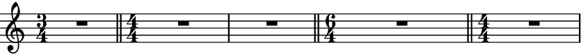
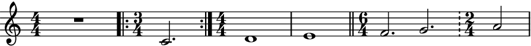

double_barlines_before_time_signatures¶
- auxjad.mutate.double_barlines_before_time_signatures(selection: abjad.select.Selection, *, context: Optional[str] = None) → None[source]¶
Mutates an input
abjad.Selectionin place and has no return value; this function adds double bar lines before all time signatures.- Basic usage:
Whenever a new time signature appears, the function adds a double bar line before it:
>>> staff = abjad.Staff( ... r"\time 3/4 c'2. \time 4/4 d'1 e'1 \time 6/4 f'2. g'2." ... ) >>> auxjad.mutate.double_barlines_before_time_signatures(staff[:]) >>> abjad.show(staff)

Note
Auxjad automatically adds this function as an extension function to
abjad.mutate. It can thus be used from eitherauxjad.mutateorabjad.mutatenamespaces. Therefore, the two lines below are equivalent:>>> auxjad.mutate.double_barlines_before_time_signatures(staff[:]) >>> abjad.mutate.double_barlines_before_time_signatures(staff[:])
- Multi-measure rests:
This function can handle multi-measure rests too.
>>> staff = abjad.Staff( ... r"\time 3/4 R1 * 3/4 " ... r"\time 4/4 R1 * 2 " ... r"\time 6/4 R1 * 6/4 " ... r"\time 4/4 R1" ... ) >>> auxjad.mutate.double_barlines_before_time_signatures(staff[:]) >>> abjad.show(staff)
- Input with bar lines:
If the input selection already contains bar lines at poinst where a time signature change, the function will only replace those of type
"|"or"", keeping all others as they were.>>> staff = abjad.Staff( ... r"R1 " ... r"\time 3/4 c'2. " ... r"\time 4/4 d'1 " ... r"e'1 " ... r"\time 6/4 f'2. g'2. " ... r"\time 2/4 a'2" ... ) >>> abjad.attach(abjad.BarLine('.|:'), staff[0]) >>> abjad.attach(abjad.BarLine(':|.'), staff[1]) >>> abjad.attach(abjad.BarLine('|'), staff[3]) >>> abjad.attach(abjad.BarLine('!'), staff[5]) >>> auxjad.mutate.double_barlines_before_time_signatures(staff[:]) >>> abjad.show(staff)

Warning
Attempting to add barlines to multiple staves in an
abjad.Scoreat the same point in the score will raise an exception:>>> up = abjad.Staff(r"\time 4/4 c'1 d'1 \time 6/4 e'1.") >>> down = abjad.Staff( ... r"\time 4/4 \clef bass c1 d1 \time 6/4 e1." ... ) >>> score = abjad.Score([up, down]) >>> auxjad.mutate.double_barlines_before_time_signatures(up[:]) >>> auxjad.mutate.double_barlines_before_time_signatures(down[:]) abjad.exceptions.PersistentIndicatorError: Can not attach ... abjad.Wrapper( context='Score', indicator=abjad.BarLine('||', format_slot='after', ), tag=abjad.Tag(), ) ... to Note('d1') in None because ... abjad.Wrapper( context='Score', indicator=abjad.BarLine('||', format_slot='after', ), tag=abjad.Tag(), ) ... is already attached to Note("d'1") in None.
This is because, by default, bar lines belong to the score scope. In order to have bar lines on both staves (e.g. for easier part extraction), invoke this mutation with the argument
contextset to'Staff'so that the double bar lines become scoped to the staff instead of the score:>>> up = abjad.Staff(r"\time 4/4 c'1 d'1 \time 6/4 e'1.") >>> down = abjad.Staff(r"\time 4/4 \clef bass c1 d1 \time 6/4 e1.") >>> score = abjad.Score([up, down]) >>> auxjad.mutate.double_barlines_before_time_signatures( ... up[:], ... context='Staff', ... ) >>> auxjad.mutate.double_barlines_before_time_signatures( ... down[:], ... context='Staff', ... ) >>> abjad.show(score)

In this case, both individual staves will also have the bar lines:
>>> abjad.show(up)

>>> abjad.show(down)

Warning
The input selection must be a contiguous logical voice. When dealing with a container with multiple subcontainers (e.g. a score containing multiple staves), the best approach is to cycle through these subcontainers, applying this function to them individually.